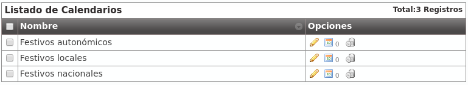

External Call filters¶
One of the most common task a company’s administrator will do is to configure schedules and calendards to apply to existing External DDIs.
The first step is creating a schedule.
Schedules¶
The section Company configuration > Schedule allows to configure different time gaps when an external DDI will be available.
The screen displayed to the company administrator looks like this:

With the above configuration, we have defined a morining schedule that will be applied from Monday to Thursday.
We can also define an afternoon schedule for Monday to Thursday too:

And apply a different time gap for the Fridays:

We have the following time gaps that combined will determine our company office schedule.

Warning
The schedule will be defined by combining the active time gaps: Any time outside this grouped gaps will be considered out-of-schedule.
Calendars¶
Calenders are used to define what days are considered as holiday. Like schedules, multiples calendars can be combined.
Let’s imagine three calendars with the following configuration:
Calendar creation process only requires a name. Once created, we can add what days will be holidays using the buttons in its row:
From this moment on, the calendar has the 1st of January of 2016 as holiday date with the locution “Happy New Year”.
Warning
Calendars logic is opposite to Schedulers: If a day is not defined as holiday in any of the calendars, it will considered a normal day and no filtering will be applied.
Hint
Holidays without special locutions will apply the external call filter holiday generic locution (see below).
Create a new External call filter
Once we have our new created schedules and calendars, it’s time to apply them in what we call External call filter.
The company admin can configure them in the following screen:

- Name
- Descriptive name that will reference this filter in DDIs configuration.
- Welcome locution
- This locution will be played if the call is not going to be forwarded by out of schedule or holiday filtering (in other words if the normal routing of the DDI is going to be applied).
- Black list
- External origin will be checked against the associated Match Lists, if a coincidence is found, the call will be rejected immediately.
- White list
- External origin will be checked against the associated Match Lists, if a coincidence is found, the call will be directly routed to the DDI destination, skipping the filter process. Take into account that black listed are checked before white lists.
- Holiday locution
- The locution will be played when the day is maked as holiday in any of the calendars associated with the filter if the calendar entry has no locution for that day.
- Holiday forward type
- After playing the above locution (if configured), call can be forwarded to a voicemail, external number or internal extension. For example, the filter of the image will redirect calls during holidays to the external number 676 676 676.
- Out of schedule locution
- The locution will be played when, not being holiday, the current time is not in any of the time gaps defined in the schedules assigned to the filter.
- Out of schedule forward type
- Like in the holidays forward, but for out of schedule. The image above won’t apply any forward (and the call will be hanguped).
- Calendars
- One or more calendars can be associated with the filter. The combination of all the callendars will be applied.
- Schedules
- One or more schedules can be applied. The combination of all the time gaps defined in the schedules will be applied.
Attention
Holidays are processed before out of schedule events.
In the next section we will use this new created filter with External DDIs so we can configure a welcome locution for normal days, and especial behaviours for hoildays and out of schedule events.